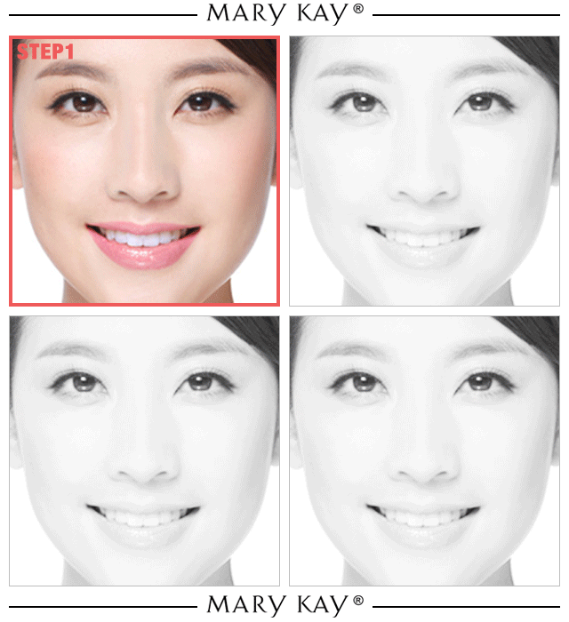

“
去年《欢乐颂》的余热还没过去，今年的《欢乐颂2》就已强势开播。五美回归，最亮眼的当属“小蚯蚓”邱莹莹。除了惹人喜爱的率真性格，精致秀挺的鼻梁也成为一大看点。
因为对于面部轮廓偏“平”的亚洲人来说，高挺的鼻梁绝对是颜值的超级加分项！
高鼻梁
塌鼻梁
▲ 三庭五眼鼻为中，鼻子的美丑从很大程度上决定了你的颜值！
有人说鼻子是“五官之王”，所以世上有不少“小眼美人”却很少有“塌鼻美人”，一个好看的鼻子会使面部更加富有3D感，增添个人魅力。
有人选择整容以“修整”鼻梁，但整容副作用多、效果还不一定好。别惦记整容了，学习打阴影才是塑造美鼻，打造完美妆容的重点！
工欲善其事必先利其器！玫琳凯的塑颜修容粉饼拥有双重古铜色泽，色调自然，正适合亚洲女性肤色，简单3步就能塑造出立体鼻型
Step 1：从眉毛开始轻刷鼻梁两侧、描画出山根和鼻梁的形状。
Step 2：在鼻翼上轻刷修容粉，修出精致的鼻头。
Step 3：用高光在鼻梁上画条垂直线，塑造整体立体感。。
掌握了鼻影修容大法，
不用开刀也能拥有高鼻梁，
让你分分钟颜值翻倍，
自带明星相，还不快快学起来！